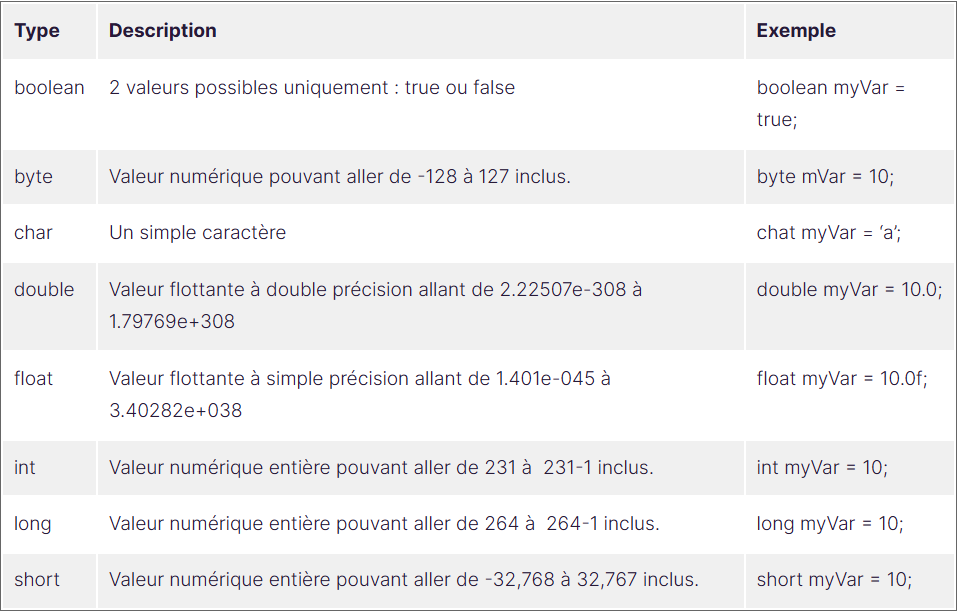

Alors que le projet Epicrafter’s Journey vit ses premiers jours, une équipe a été constituée. Laissez-moi vous présenter ses membres :
Après votre première rencontre, Marc souhaite vous faire monter en compétences avant de vous lancer concrètement dans le bain. Jenny décale donc le planning et vous laisse quelques jours pour vous préparer avant le lancement des grandes manœuvres !
Me préparer ? Mais comment ?
Marc vous explique :
Tu vas te préparer une boîte à outils. Tu sais, un développeur est comme un artisan. Face à un nouveau chantier,
l'artisan va préparer ses outils pour réaliser son travail, et pour cela il fera le tour de son atelier pour
vérifier ce
qu’il a à disposition.
L’idée est saisie ! Faisons le tour de l’atelier Java dans ses premiers chapitres afin de nous permettre le
moment
venu
de choisir le bon outil pour la bonne tâche.
Quel est le premier outil de notre atelier qui mérite d’être examiné ? Pour cela demandons-nous ce que fait
fondamentalement un programme ?
Exécuter du code ?
Bonne tentative ! Je ne peux pas vous donner tort, mais soyons plus précis. Répondre à cette question n’est pas
si
simple, voilà mon avis : fondamentalement, un programme traite des données.
Cette définition me plaît car elle fait ressortir deux points :
Commençons par parler des données. Les programmes que nous développons doivent être en mesure de manipuler de
l’information ou bien de la donnée. En tant qu’être humain, nous sommes constamment en train de traiter de
l’information. Nos différents sens nous permettent de capter l’information puis notre cerveau l'interprète ce
qui
nous
amène à agir d’une façon ou d’une autre. Nous retenons très brièvement certaines informations tandis que nous
gardons
précisément en mémoire d’autres informations.
Un programme devra se comporter comme notre cerveau et donc manipuler de l’information.
Comment je peux faire ça avec le langage Java ?
Premièrement grâce à des variables ! Voilà le premier outil que nous devons savoir utiliser. Une
variable est un
espace
mémoire du système d'exploitation qui contient une information.
Comparons les variables à des boîtes. Imaginez une boîte dans laquelle nous allons ranger quelque chose et
celle-ci
sera
étiquetée avec un nom.
Étant donné que le langage Java est typé, nous ne pourrons pas nous contenter de donner uniquement une
étiquette
(un
nom) à notre boîte. Nous allons devoir également indiquer sa forme, autrement dit son type.
Retenez d’ores et déjà ce point clé, une variable se définit par un nom ET un type.
Maintenant j’attire votre attention sur 3 aspects : la déclaration, l’affectation et l’initialisation d’une variable.
Parfois la déclaration et l'initialisation se font lors de la même instruction, mais rappelez-vous que ce sont
deux
choses différentes.
Enfin une variable possède une portée, ce qui signifie qu’elle sera utilisable uniquement
dans
une certaine zone
de
code.
Notre boîte est rangée dans une pièce. En dehors de la pièce on ne la voit plus et on pourrait
dire
qu’elle
est
hors de notre portée. De la même façon, lorsqu'une variable est déclarée dans un bloc de code, elle est ensuite
disponible uniquement dans ce bloc.
En Java, un bloc de code est délimité par des accolades { }.
Jusque-là j’arrive à suivre, et dans la pratique ? Car je n’ai pas vu une seule ligne de code là.
Vous avez raison, j’y arrive. Pour ce faire, laissez-moi vous présenter les types primitifs.
Un type permet de définir, symboliquement parlant, la forme de notre variable. Java nous offre 8 types dits primitifs. Retenons que c’est la façon la plus simple de typer une donnée. Mais assez parler, retrouvez-moi dans la démonstration ci-dessous : (c.f IDE Eclipse : C:\Users\clair\OneDrive\Bureau\TRAVAIL\Workspace-pro-web\ej\src\ej)
Que pouvons-nous retenir de cette démonstration ?
Lors de la création du projet nous n’avons pas coché la case Create module-info.java file, cela correspond à une fonctionnalité qui est arrivée à partir de la version 9 de Java que nous ne traiterons pas dans ce cours.
Tandis que nous parlons de variables numériques sachez que l’on peut y appliquer les opérateurs arithmétiques
habituels
: +, -, *, /
Par exemple : (c.f IDE Eclipse : C:\Users\clair\OneDrive\Bureau\TRAVAIL\Workspace-pro-web\ej\src\ej)
Voici un tableau reprenant les 8 types et une description associée :
Pour retrouver plus de détails sur ces 8 types primitifs, je vous encourage à
consulter la documentation Java.
Sympa tout ça, n’est-ce pas insuffisant 8 types pour gérer toutes les possibles informations qui arrivent dans
un
programme ?
Bonne remarque ! C’est en effet insuffisant, allons découvrir les types complexes.
Comment gérer tous les types d’information possibles et inimaginables ? La solution qu'apporte un langage de
programmation à cette problématique sera des plus importantes.
Il est certain qu’il faut une solution dynamique. Autrement dit, puisqu’il serait impossible de définir à
l’avance tous
les types de données possibles, il est crucial de pouvoir définir ses propres types au fur et à
mesure.
Et Java
nous
fournit un tel outil !
Attends, tu nous parles de quel outil ?
Le langage Java applique le paradigme de programmation objet. Bien que je ne veuille pas trop anticiper sur la seconde partie du cours qui va expliquer ce paradigme en long et en large, sachez qu’un objet est un ensemble de données et de traitements.
Un paradigme de programmation est une façon de traiter les problématiques de programmation afin d’y apporter une réponse pertinente.
Dans le contexte des variables, le point clé est l’expression “ensemble de données”. En fait, un objet peut assembler plusieurs données ensemble. On peut ainsi définir des données complexes et ainsi des types complexes. Le point étant qu’ un objet est un type.
Voyons cela ensemble dans la démonstration suivante :(c.f IDE VSCode, Lessons\coursOpenclassrooms\apprendreAProgrammerEnJava\lessonsOpenclassroomsJavaApplicationEJ)
Qu’avons-nous pu voir ensemble ?
Contrairement aux types primitifs, les types complexes n'ont pas de valeur par défaut. Ainsi Java affecte null à la variable lorsqu’elle a été déclarée mais non initialisée.
Ce simple exemple est pertinent pour découvrir les types complexes.
Mais c’est bien dans la deuxième partie de ce
cours
que nous verrons toute la puissance de ces types grâce à la programmation orientée objet !
Pour gérer un ensemble de données d’un même type, le langage Java comme de nombreux autres
langages de
programmation
implémente les tableaux (array en anglais).
Un tableau possède un nombre défini d’éléments. Chaque case du tableau peut contenir un élément. Chaque élément
est
du
même type.
Observez le code suivant : int[] unTableauDEntier = {5,10,15,20};
Je peux accéder à une case du tableau en indiquant l’indice de cette dernière grâce à la notation suivante : unTableauDentier[0];
La première case a pour indice 0, la deuxième l’indice 1, etc.
Il est également possible de déclarer et initialiser un tableau où chaque case est vide avec la notation
suivante :
char[] unTableauDeChar = new char[3];
Le mot-clé new a également d’autres manières d’être utilisé. Nous le verrons dans la deuxième
partie du cours.
Nous pouvons ensuite affecter une valeur à chaque case. Par exemple : (c.f IDE VSCode,
Lessons\coursOpenclassrooms\apprendreAProgrammerEnJava\lessonsOpenclassroomsJavaApplicationEJ)
Avant de conclure cette section, sachez que pour être précis il s’agit ici d’un tableau unidimensionnel. Il est possible de créer des tableaux à plusieurs dimensions. Voyez la notation suivante :
int[][] unTableauBiDimentionnel = new int[2][3];
Dans cet exemple il y a donc 6 cases avec pour indices : [0][0], [0][1], [0][2], [1][0], [1][1], [1][2].
Voyons désormais ensemble la dernière notion liée aux variables pour ce chapitre.
Une des caractéristiques du Java est que c’est un langage typé. Nous l’avons bien vu dans les
sections
précédentes,
impossible de déclarer une variable sans indiquer le type. Cette contrainte a l’avantage de forcer le
développeur à
mieux comprendre ce qu’il code mais il faut reconnaître que cela peut aussi alourdir le code.
Ainsi depuis la version 10 de Java le mot-clé var a été introduit pour
simplifier l’écriture du
code.
Ce mot-clé peut se substituer au type lors de la déclaration de la variable. Par exemple :
var unEntier = 5;
Mais c’est trop fort ! Pourquoi tu n’en as pas parlé dès le début ?!
Pour la bonne raison qu’il faut utiliser cette possibilité avec précaution. Dans le bytecode
généré, le
compilateur
aura
défini le bon type à la place du mot-clé var.
La condition est que lors de la déclaration de la variable
cette
dernière
soit également initialisée pour permettre au compilateur de déterminer le type
correspondant.
Au vu de cette particularité, soyez intransigeants sur les deux points suivants concernant
l’utilisation du
mot-clé
var
:
Une dernière information, une ligne d’instruction qui commence par // est une ligne de
commentaire.
Elle n’est
pas
exécutée et sert donc à écrire un texte informatif. Pour mettre en commentaire
plusieurs lignes,
utilisez la
syntaxe
/*
puis */ .
Voici un lien vers la documentation traitant de ce sujet de format.
Marc :
Est-ce que tu connais le fameux Hello World ? C’est la première chose que fait généralement un développeur avec
un
nouveau langage de programmation. Je te laisse me montrer ça !
Enthousiaste de cette première tâche qui vous est confiée, vous créez un projet dans le but d’afficher le texte
Hello
World dans une console.
Créez un fichier Main.java et ajoutez y le code minimal :
Puis ajouter la fonction main qui est le point d’entrée de tout projet Java.
Au sein de cette fonction déclarez une variable nommée texte de type String et affectez y la valeur “Hello World”.
Ensuite affichez cette valeur dans la console.
Retrouvez la correction dans ce repository GitHub.